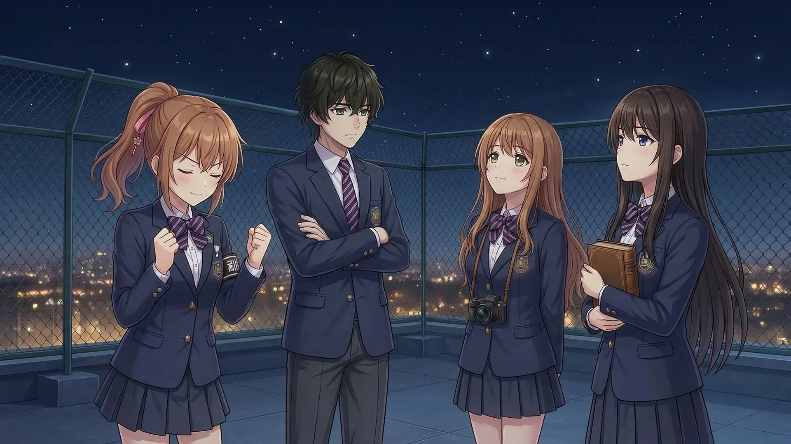
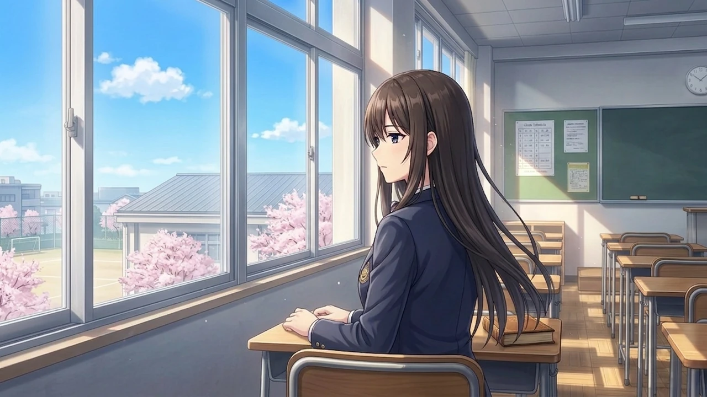

Story
말하지 못한 것들이 별 아래에서 다시 모습을 되찾는다.
주인공 키리시마 이사무의 방과 후는 조금씩 빛을 잃고 있었다. 하지만 옥상에서 나눈 약속, 동아리실의 침묵, 새벽을 기다리는 옆얼굴이 멈췄던 시간을 다시 움직인다.
공통 루트의 선택에 따라 사쿠라자키 사쿠라, 하나조노 코토하, 츠키요노 마히루의 이야기로 이어진다. 각자의 거짓과 소원을 마주한 뒤, 플레이어는 그녀들과의 경계선을 넘는다.

Browser Visual Novel
거짓과 소원의 경계
밝은 농담도 망설이는 대답도. 목소리로 가까워지는 세 사람의 방과 후. 끝까지 무료로 즐기는 브라우저 연애 어드벤처.
Opening Movie
주제가와 함께 세 사람의 방과 후로.
주제가가 흐르는 오프닝 / 약 1분 43초
Story
주인공 키리시마 이사무의 방과 후는 조금씩 빛을 잃고 있었다. 하지만 옥상에서 나눈 약속, 동아리실의 침묵, 새벽을 기다리는 옆얼굴이 멈췄던 시간을 다시 움직인다.
공통 루트의 선택에 따라 사쿠라자키 사쿠라, 하나조노 코토하, 츠키요노 마히루의 이야기로 이어진다. 각자의 거짓과 소원을 마주한 뒤, 플레이어는 그녀들과의 경계선을 넘는다.
World
Characters

Badminton Club
언제나 밝게, 누구보다 먼저 웃는 소녀. 그 미소는 강함이자 아무에게도 보이지 못한 약함을 숨기는 갑옷이다.
새 학기는 한 번뿐이잖아.
VOICE / Suzu

Quiet Melody
조용한 시간을 좋아하고 말보다 침묵에 진심이 배어나는 소녀. 가까워질수록 닫혀 있던 소리가 조금씩 풀려 간다.
수면은 조금 음악과 닮았어요.
VOICE / Leira

Dawn Notebook
카메라와 공책을 놓지 않는 소꿉친구. 오늘 살아 있어서 좋았던 일을 계속 적으며 새벽을 기다린다.
그냥 기억하고 싶을 뿐이야.
VOICE / Yuki
Gallery






Play
공통 루트의 선택에서 세 사람 각각의 개별 루트로 이어집니다.
중요한 선택 전에 저장하고 다른 미래를 확인할 수 있습니다.
이야기를 읽은 뒤 인상적인 CG를 다시 보는 수집 기능.
주인공 외 모든 대사의 음성과 배경 음악·효과음으로 방과 후의 분위기를 전합니다.
설치 없이 공개 페이지에서 끝까지 무료로 플레이할 수 있습니다.
누구나 읽을 수 있도록 만든 전체 이용가 브라우저 노벨입니다.
System Requirements
웹 공개판을 브라우저에서 바로 플레이할 수 있습니다. PC에서는 넓은 화면, 스마트폰에서는 홈 화면에 추가한 뒤 실행하기를 권장합니다.
Updates
After School Stella
엇갈린 말도 늦어 버린 소원도 이야기 속에서는 아직 주워 담을 수 있습니다. 당신의 선택으로 그녀들의 방과 후를 지켜봐 주세요.
게임으로 이동
Official X
#放課後のステラ 공식 게시물
제작 소식과 업데이트, 방과 후의 여운을 전하는 게시물을 표시합니다. 공식 계정의 해시태그와 함께 작품의 분위기를 나눕니다.
#放課後のステラ 최신 게시물은 X 검색 페이지에서 볼 수 있습니다.